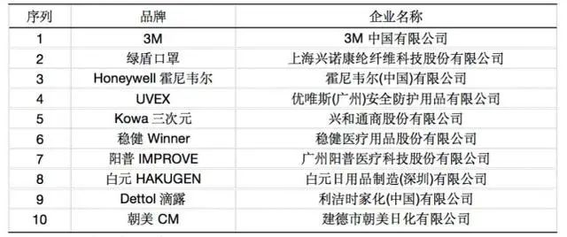

口罩“心脏”熔喷布这么缺，为什么厂商不借机上产线、扩产能？
原文链接 备份链接 图片来源：视觉中国 记者：彭强 “ 熔喷布设备供应周期更长，跨界生产的难度、要求和风险也更大。 ” “除了熔喷布，其他的都好说。”在某口罩货源共享交流群里，一位生产商这样表示。 该群里汇集了百余位口罩产业上下游的相关厂 …

口罩产业，中国的优势在低成本和产能，但口罩产业的金字塔尖依然被3M、霍尼韦尔、尤妮佳等公司占据，这背后是一套制造强国的工业哲学

陈琛 林雪萍 | 文
随着疫情扩展到全国，各大药房、网店口罩纷纷售罄，补货更是遥遥无期，世界各国产能已经被预定至数月之后。短缺蔓延到全球，日本、韩国、美国、欧洲甚至印度的商店里都是一罩难求。
世界卫生组织2月6日发布报告，中国口罩的需求量上升了100倍，价格上升了20倍。很难想象，具有世界上最完整工业体系的中国竟然在小小的口罩上犯了难。
远在日本和欧洲的供应商也感受到市场的热浪，日本官房长官菅义伟在2月1日的记者会上表示，在日本国内口罩业者采取24 小时生产体制的努力下，日本每周的口罩供应量可望达到1亿片以上。路透社1月底报道，捷克企业接到的订单暴增570倍，另据《纽约时报》报道，法国昂热的一家企业在一周之内接到了10亿订单，而去年全年的产量才是1.7亿只。
口罩为什么不能很快上市
口罩是超大规模、廉价制造、模块化的装配型产品。
首先是规模。中国产量占据世界的50%。每天生产口罩一千多万只，2019年生产50亿只，居世界第一。
其次是廉价制造，每个口罩可能才赚几厘钱，盈利靠海量出货，涓滴汇成小溪流。河南长垣两家医疗器械公司董事长证实，医用普通口罩出厂价每个9分钱左右，医用外科口罩每个在4毛到4毛5分之间。江苏省江阴某口罩工厂曾对外表示，工厂一年给日本代工口罩3亿只，每只出厂价两分钱，每只赚不到五厘钱。
最后口罩是模块化的装配产品。普通的医用口罩是由聚丙烯纤维无纺布层，熔喷布层，耳带线，鼻梁金属条等部件组装而成，根据不同的种类还需添加过滤棉层和活性炭层。而中国的口罩工厂并不拥有完整的产业链条，只是将这些零件组装起来的地方。
假设这些原材料供给足够充足，新扩产的口罩工厂也很难很快就将口罩输送到市场。去除设备到货、设备调试时间，只看口罩从零件到包装成箱，首先是口罩的装配，目前通过压合、裁切、贴条、焊带等流程就可以生产出一枚口罩，全套自动化生产线每用不了1秒可以生产一个口罩。
但耗时的是消毒过程，这是新投产的口罩生产线不能很快上市的一个重要因素，每个口罩需要在环氧乙烷溶液中消毒，由于环氧乙烷属于有毒物质，消毒过后的口罩需要静置解析至少7天，待环氧乙烷全部分解掉后，才能包装上市。若采用辐照灭菌技术，可将这一过程缩短至24小时。
口罩背后的复杂产业链
口罩虽是几毛钱的产品，但同样拥有复杂精巧的产业链。
和其他产业相比，国内产值仅为一百多亿的口罩价值链犹如一条细长蜿蜒的小河，和多条大江大河连通，比如化工、纺织、机械、电子。
原材料方面，聚丙烯被加工成喷熔无纺布，再运送到口罩厂商，经过裁剪缝制成为口罩，包装之后再经过消毒灭菌，之后要通过解析，最后才能转变成可以在市场上流通的产品。设备方面，涉及到一大批机械加工零部件、气动元件、电气零部件，又通往了另一个繁杂无比的世界。
口罩用的聚丙乙烯可能来自于浙江的镇海炼化，这些原料在山东被加工成中间产品熔喷无纺布，中间产品再运输到河南，当地及全国其他地方再引进鼻梁条、挂耳绳、粘合剂，最终制成口罩，小小的一个口罩，其实是标准的模块化组合式产品。
河南的设备也有可能来自东莞，东莞的口罩机设备涉及到材料加工、电气控制、气动元件，很有可能还要从长三角或珠三角某地购买超声波压焊设备，从上海购买自动包装设备，还要从其他地方引入相关的消毒设备和原料。
小小的一个口罩，在牵动无数人神经的同时，也牵动了数十条大大小小的产业链。长垣生产的口罩，其实是全球供应链集成融合出来的产物，其中涉及到的资产可能达到数十万亿，即使是福布斯排行榜上的首富也负担不起。
扎进口罩世界还会发现，即使是大企业来做口罩，也很难一蹴而就，设备的研发、制造、安装、调试和改进，原材料的引进，无尘生产车间的建设，物料的对接和配送，工人的培训，非常时期，雄壮的大企业也得把此前市场上一件又一件琐碎的小事情扛在身上，也只有汽车、化工和电子行业的巨头才能在关键时期跨越大江大河。
口罩背后的制造大国与强国
从中国制造口罩的能力来看，中国是制造强国吗？很遗憾，小小口罩，同样隔开了大国和强国。
如何理解一个制造强国？发动机能否造出来固然是一个标志，小小口罩能不能造好也是一个重要指标。
天下口罩，谁是大牛？世界级品牌，是来自美国的3M和霍尼韦尔，还有日本最大口罩制造商尤妮佳。这些国外品牌的价格，往往是国内的价格的10倍以上。

2019年中国口罩十大品牌 来源：观研天下
这些公司都是什么样的公司呢？
霍尼韦尔，工业巨头，2018财年收入420亿美元，利润近70亿美元；3M，工业巨头，2019 年净收入超过 300 亿美元，净利润约 46 亿美元；尤妮佳，日用消费品领头羊，2019财年收入66亿美元，利润近6亿美元。
这些大品牌为什么要去做小小的口罩？口罩在中国只是一个上百亿的市场。看上去还不够群雄塞牙缝，那么国外品牌如何生存？
这些企业无一不是多元化的代表，但是做口罩却各有各的招法。
以“尤妮佳”为例，它曾两次入选福布斯发布的 “全球100家最具创新力公司”榜单。它最大的能力是来自强大的情报收集能力，和对用户个性化需求的把握。如口罩而言，尤妮佳也开发了给女士的小脸口罩。并且凭借无纺布吸收材料为轴心，多面拓展，成为生活护理领域的超级巨头。尤妮佳在一些看似传统的产品中玩出了花样。
霍尼韦尔的优势，则体现在对工厂环境和安全防护有充分的认识，而3M则是材料的巨人。
小口罩当然无法撑起3M、霍尼韦尔、尤妮佳的生存空间，但是他们多元化产品的结网效应明显。
口罩背后是材料的竞争，也是装备的竞争。口罩不过是技术土壤里长出的一棵大树，是系统性解决方案的一个分支。
这就是制造强国的特点，它不是以单项产业的规模取胜，而以底层技术向各领域渗透而取胜。看似无序的多元化产品，却是靠技术将其从内涵中串织起来，编制出来一个难以复制的有机体。
利用标准确定行业领导地位，则是另外一种诀窍。比如疫情中大家最喜欢的N95口罩，就是美国标准， N95口罩是指符合美国国家职业安全卫生研究所规定的空气过滤“N95”评级的、可阻挡95%直径0.3微米以上的非油性颗粒的口罩，其他国家的标准也很大程度上参考了美国标准。
但是要确定这个标准，需要严格的测试流程，专业的测试仪器，比如说美国的TSI公司气溶胶检测仪器，如果没有仪器和手段，那想确定标准也无从说起。中国大把的钱，都被这些标准检测机构给拿走了。
口罩产业，中国的优势在于低成本和产能，但口罩产业的金字塔尖依然被制造业强国掌握，这背后是一套制造强国的工业哲学。
陈琛为机工智库高级研究员、林雪萍为北京联讯动力咨询有限公司总经理，编辑：马克

▲点击图片查看更多疫情报道
责编 | 黄端 duanhuang@caijing.com.cn
本文为《财经》杂志原创文章，未经授权不得转载或建立镜像。如需转载，请在文末留言申请并获取授权。
原文链接 备份链接 图片来源：视觉中国 记者：彭强 “ 熔喷布设备供应周期更长，跨界生产的难度、要求和风险也更大。 ” “除了熔喷布，其他的都好说。”在某口罩货源共享交流群里，一位生产商这样表示。 该群里汇集了百余位口罩产业上下游的相关厂 …
原文链接 备份链接 经济观察报 记者 于惠如 深圳报道 2月12日晚7点58分，桌上的手机开始震动，李娜从沙发上坐直，拿过手机关掉闹钟，开始登陆穗康小程序，随后的十几分钟她一直盯着手机，不断刷新页面。8点10分，她叹了口气，放下手机。“预 …
原文链接 备份链接 目前为止，伽蓝已累计捐款捐物超过1000万元，全国近2万名医护人员用上了伽蓝的产品，我们感到非常自豪，能够为一线医护人员尽一些绵薄之力。 口述 | 陈涓玲 整理 | 沈 林 最近的一个多月以来，每天从早到晚都在忙忙碌 …
原文链接 备份链接 在我家，一直是爸爸负责买菜。在闭门不出的日子里，食物一度成为爸爸最担忧的事情。 他的恐慌在 2 月 7 日小区完全封闭时达到顶峰。那几天，小区里先后确诊了 7 例新冠肺炎患者，还有多例疑似，救护车呜啦呜啦来了好几趟，前 …
原文链接 备份链接 “ - 疫 情 之 下 - 疫情没有结束，我们的工作仍在继续。在这场“战疫”中，我们的付出终有所获，经营户对我们的理解，人民群众对我们的信任，鼓舞着我们在疫情蔓延的环境下不断向前。 ” 我的朋友是一名市场监督管理所的 …